前言：
相信大家在看我的文章之前，也看过其他人写的博客，网上的资料大多都是zabbix2.x版本的添加网络设备的教程，可是我用的版本和他们的zabbix版本是不一样的，这就给我在监控上制造了一定的难度，我百度查阅了相关资料，监控网络设备一般大家用的SNMP接口进行监控，而我们监控windows或者linux服务器时用的都是agent代理程序的接口进行监控，因为便于我们管理，便于我们开发自定义监控项，所以agent代理程序的接口进行监控对于我来说当然是最喜欢的啊。但是监控网络设备就不适合用agent代理程序的接口进行监控了，因为网络设备是没有操作系统的,无法让我们上去进行安装agent客户端啊，这些开发的人很聪明，自己开发出来了一个"SNMP V1"，"SNMP V2","SNMP V3"目前生产环境中用的最多的是"SNMP V2","SNMP V3"用的也不少，而且安全性更高，是将数据进行加密的（记住“agent代理程序的接口”也是可以支持加密的哟），但是配置起来比较繁琐，如果有时间的话，我会给大家分享下加密的监控方式。本文主要用的是"SNMP V2"版本进行监控网络设备的。
好了，话不多说，让我们开始配置的过程吧，配置起来其实很简单，如果你熟练的话2分钟就可以搞定了（我才不会告诉你第一次完成监控花费了是这个的60倍的时间才搞定的呢！相信一些小白跟我开始一样也没有搞明白，不过看完我这篇文章，按照我的去做应该就OK了），配置过程我把它分为3个步骤：
1>.在网络设备上开启SNMP服务并配置好团体名称（一般我们默认的都是“public”，当然你可以自定义的。）
2>.利用第三方工具查找出你网络设备的OID号码；
3>.在ZABBIX服务器的WEB端配置好相应的参数即可。
注意：
此次试验zabbix版本是3.2版本，如果您用的是zabbix2.x版本可能存在不适用的情况，您可以把该网页关闭了
一.网络设备上的配置
1.查看你的设备上是否配置的有相关的团体名称
1 <YZWWHX-S7506E-V>display snmp-agent community 配置之前所拥有的团体名称
2 Community name: public
3 Group name: public
4 Storage-type: nonVolatile
5
6 Community name: private
7 Group name: private
8 Storage-type: nonVolatile
9
10 <YZWWHX-S7506E-V>
2.如果你对上面的2个团体名称不满意的话，需要自定义一个也是OK的，怎么办呢？看下面的操作
1 <YZWWHX-S7506E-V>system-view
2 [YZWWHX-S7506E-V]snmp-agent community read yinzhengjie #创建一个叫"yinzhengjie"的团体名称
3 [YZWWHX-S7506E-V]snmp-agent sys-info version all #让这个设备启用“SNMPv1, SNMPv2c and SNMPv3”接口的支持，当然我们这里也可以不用选择all，直接选择v2即可，不过为了研究V3带来的方便请允许我这么配置吧~
4 [YZWWHX-S7506E-V]snmp-agent target-host trap address udp-domain 172.16.96.210 udp-port 161 params securityname zabbix
5 [YZWWHX-S7506E-V]display snmp-agent community
6 Community name: public
7 Group name: public
8 Storage-type: nonVolatile
9
10 Community name: private
11 Group name: private
12 Storage-type: nonVolatile
13
14 Community name: yinzhengjie #这就是刚刚创建出来的
15 Group name: yinzhengjie
16 Storage-type: nonVolatile
17
18 [YZWWHX-S7506E-V]
二.查找OID
1.下载查阅OID的第三方软件（Getif）;
大家可以在百度下载，我这里有意见下载好的安装包，大家可以直接下载：
链接：http://pan.baidu.com/s/1eSP5fyE 密码：iuwv
2.安装后并运行该软件（提示：不同的操作系统要注意你自己的权限是否为管理员【Windows操作系统】）
a>.以管理员身份运行该软件；
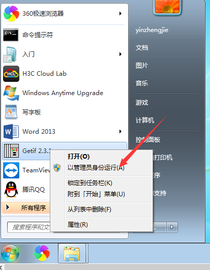
b>.输入网络设备的管理IP以及刚刚创建的团体名
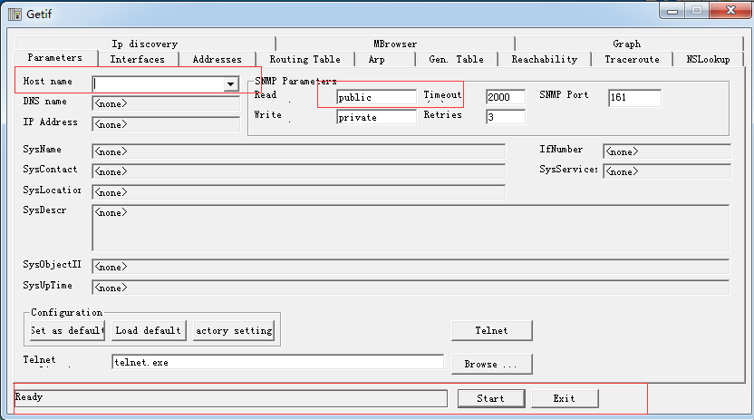
c>.观察最下面一行的状态是否为"SysInfo variables OK",如果有这个状态，则说明：可以正确获取交换机的OID。
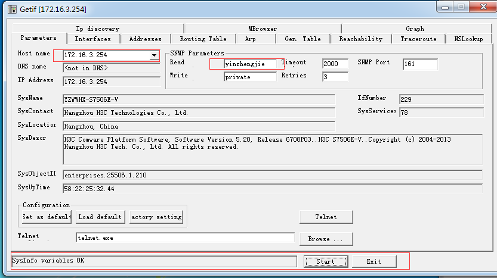
d>.切换菜单栏为：“MBrowser”
依次选择：iso->org->dod->internet->mgmt->mib-2->interface->ifTable->ifEntry->ifInOctets #这是交换机端口入流量接口，我们会在下面看到入接口的OID，但是并不完整，我们还需要结合各个接口的ID，才能凑成完整的OID，因为我们要监控的是各个接口，其中包括物理端口，vlan等等。
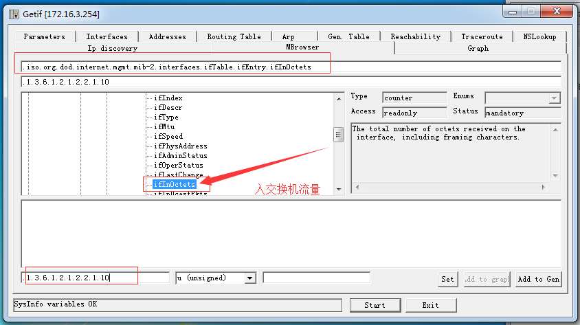
依次选择：iso->org->dod->internet->mgmt->mib-2->interface->ifTable->ifEntry->ifOutOctets #同上，这是交换机的出流量接口信息，下面有其的OID信息。
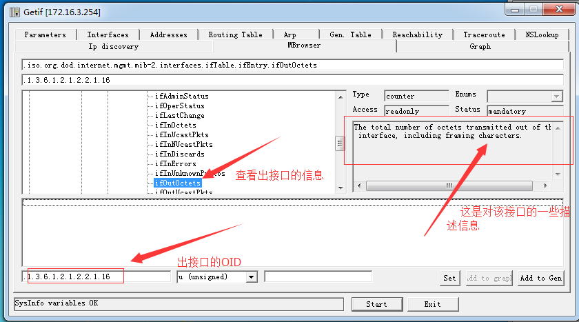
3.查看端口的接口信息，即完整的OID信息。
a>.切换菜单栏为：“Interfaces”，点击start按钮，就会自动搜索各个接口信息
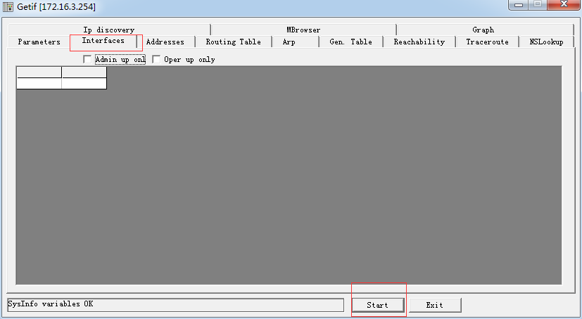
b>.查看接口信息
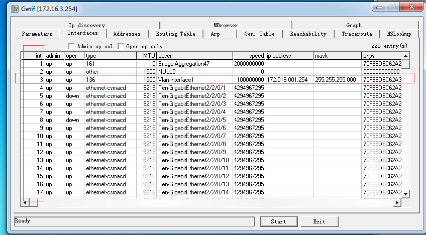
c>.如何获得一个OID完整的OID呢？
方法一：
其实很简单，我下面举两个例子，相信您一看就明白了
出接口：1.3.6.1.2.1.2.2.1.16.3 #其中“1.3.6.1.2.1.2.2.1.16”表示出接口的OID，而后面的“3”为接口的ID,整个加起来就是一个完整的出接口OID信息
入接口：1.3.6.1.2.1.2.2.1.10.3 #其中“1.3.6.1.2.1.2.2.1.10”表示入接口的OID，而后面的“3”表示接口的ID，整个加起来就是一个完整的入接口OID信息
方法二：
上面的方法后简单了吧，就是通过MBrowser和Interfaces来手动获取一个完整的OID信息，这样弄肯定是没有错的，但是还有一种方法特别简单，请看图：
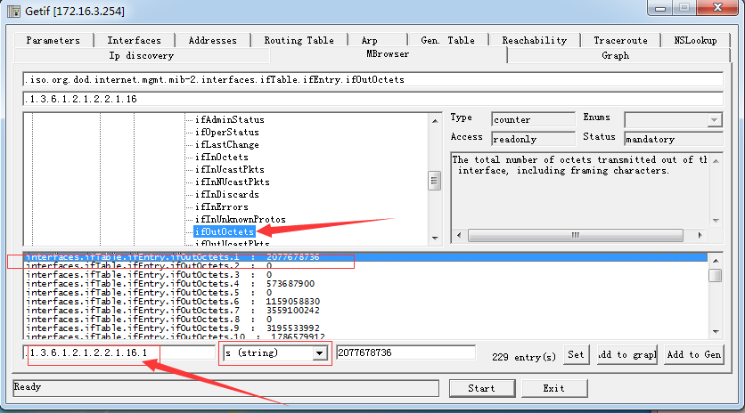
点击后选择字符类型为字符串（string），其左侧就是完整的OID，此时interfaces.ifTable.ifEntry.ifInOctets.1中“interfaces.ifTable.ifEntry.ifOutOctets”就是出接口的OID,而这个“1”就是接口标记为“1”的接口信息，我们从图中就可以看到完整的OID信息：“1.3.6.1.2.1.2.2.1.16.1”，那么问题来了，你清楚这个对应哪个接口吗？你显然是不清楚的，及时你在zabbix监控的有数据也不好使~这个时候还是要结合Interfaces去查找标记为“1”所对应的接口信息。所以，我们可以忽略这种方式去查OID，直接用第一种方法去查就好~
三.zabbix添加交换机监控
好了，既然网络设备以及开启了SNMP协议，而且也有了想要的OID，那么我们就一起来配置一下zabbix的web端吧~配置过程很简单，具体操作如下：
1.创建主机
a>.创建主机群组
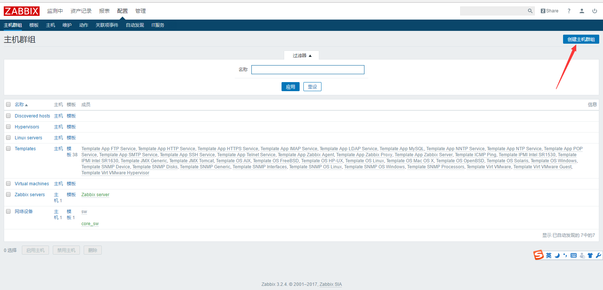
b>.给该主机群组自定义一个名称方便你记忆即可；
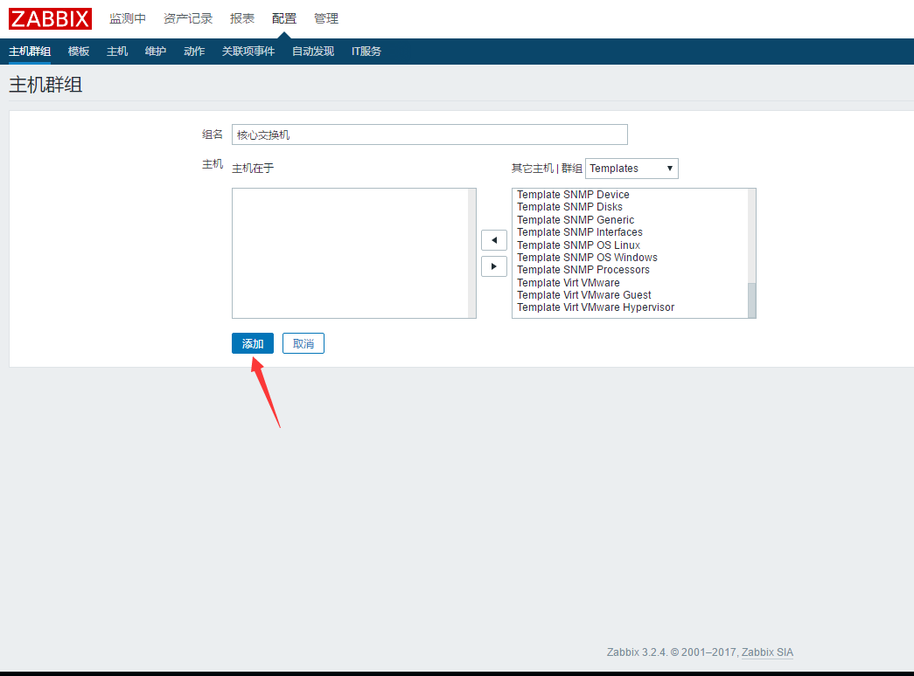
c>.创建主机
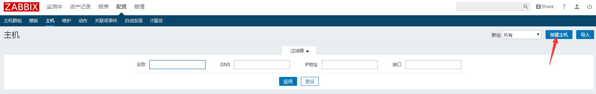
d>.自定义主机名称已经选择相应的接口类型
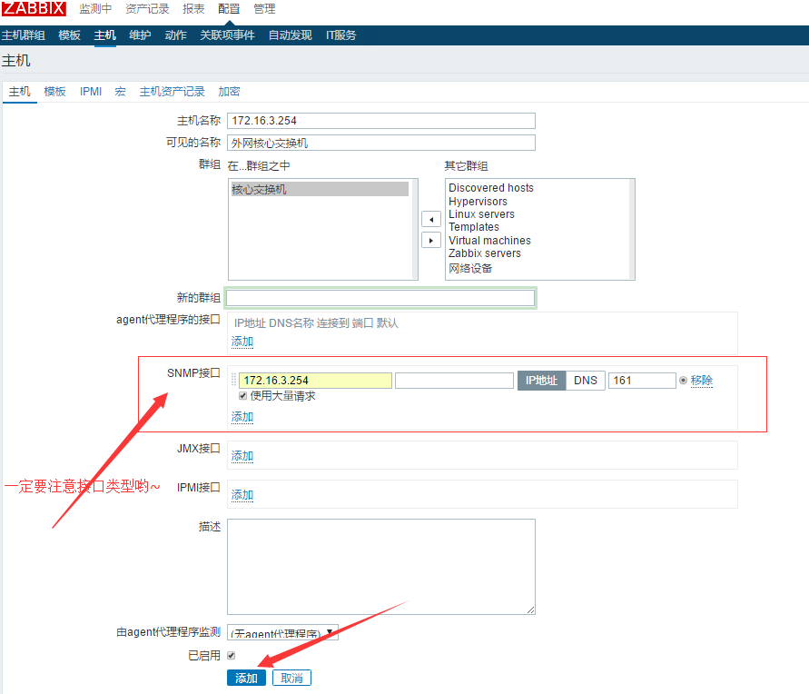
2.创建模板
创建模板是为了方便对具有监控相同监控项的主机直接link即可，不用再重新做配置，这是zabbix的好处之一，相信玩过zabbix的人应该都清楚。
a>.点击创建模板；
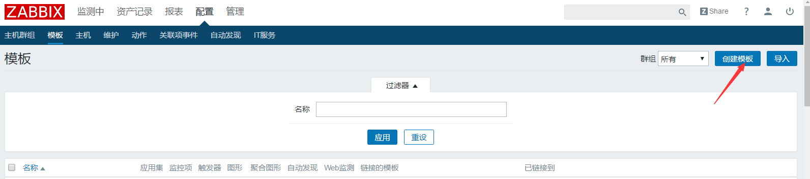
b>.点击添加模板
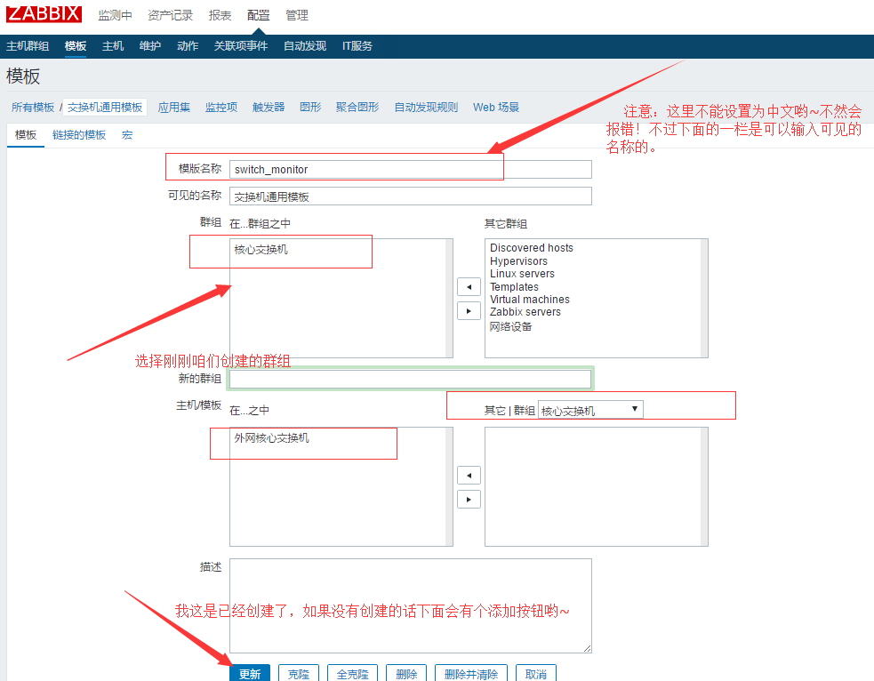
3.添加监控项
a>.找到刚刚咱们自定义的模板；
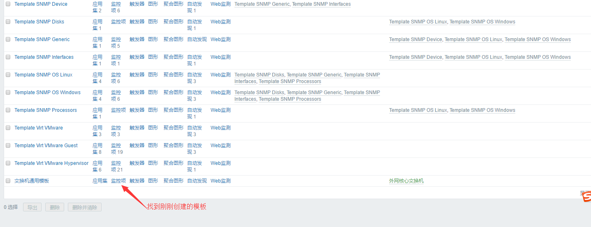
b>.点击创建监控项
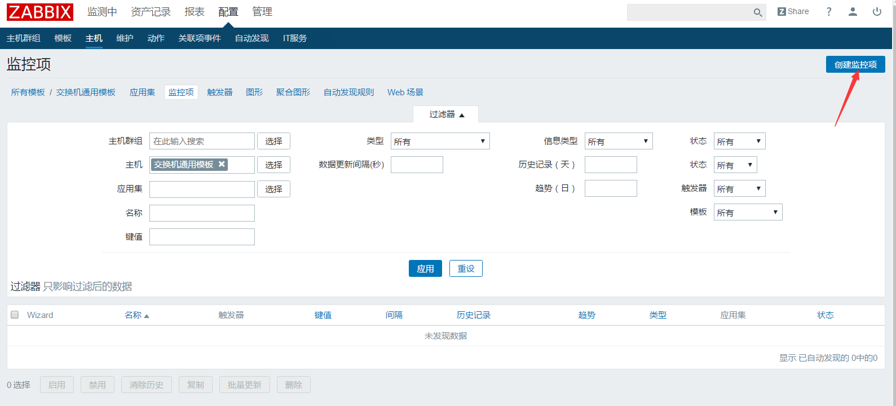
c>.监控一个出接口信息，以下我标记出来的都要填写哟~
注意那个数字“8”，其实是“位”与"比特"的换算，即“1比特”=“8位”。
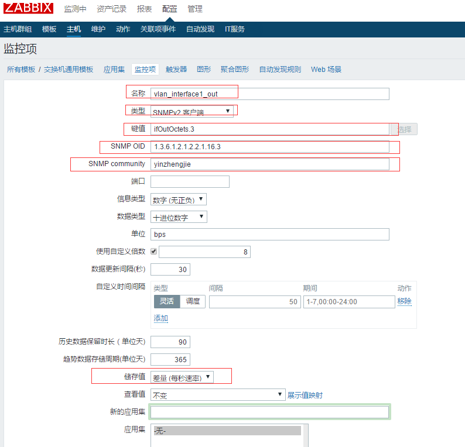
4.为监控项创建图像
创建图像是为了方便我更加直观的看出数据走势的规律性，因此我不管做什么我都系统给他添加监控项。
a>.找到之前创建的模板，点击图形；
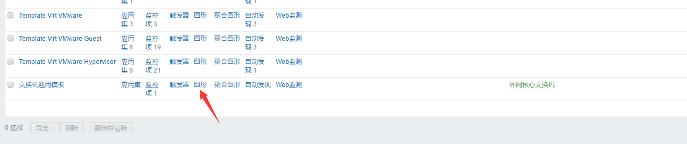
b>.点击创建图形
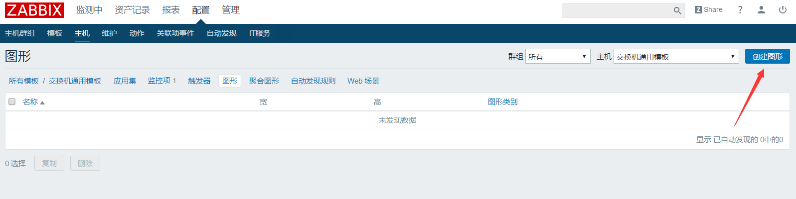
c>.编辑名称并点击添加按钮
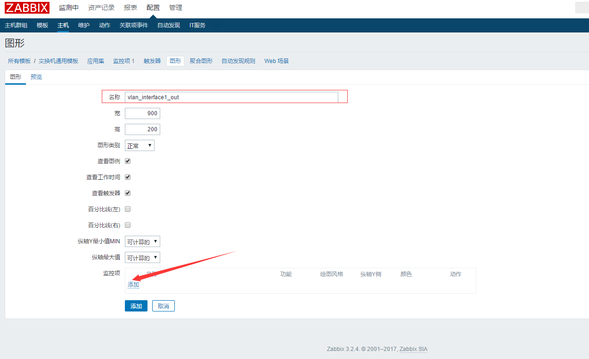
d>.点击选择按钮
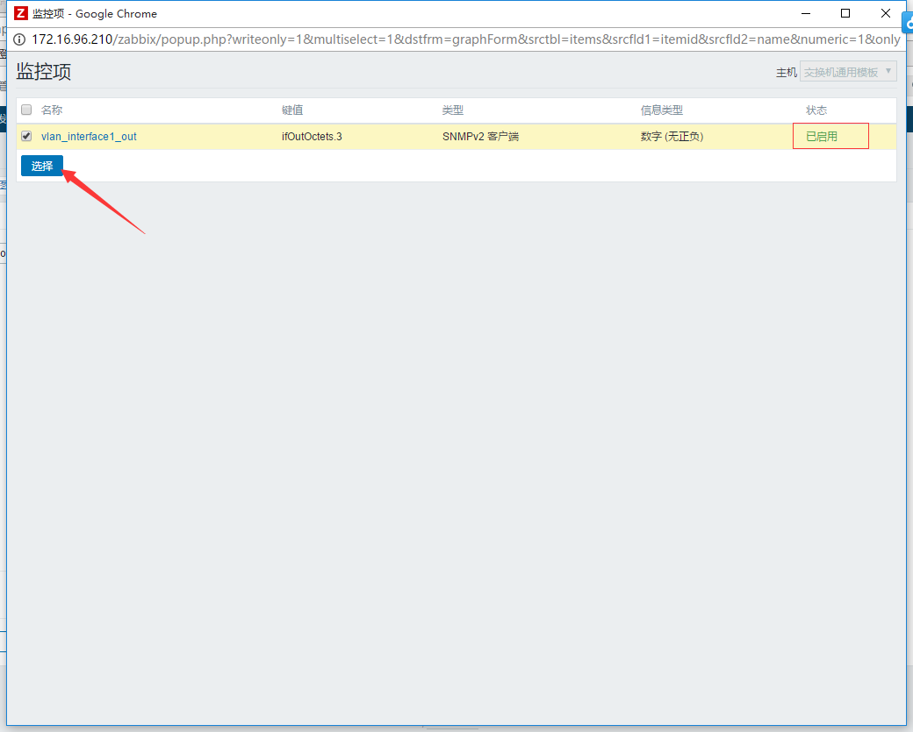
e>.点击添加

5.查看图形走势
a>.查看上图的配置效果图；
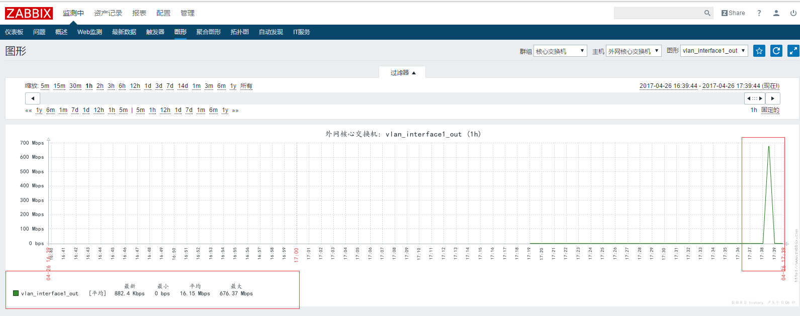
b>.同样的方法，我们配置出入接口的监控信息如下图
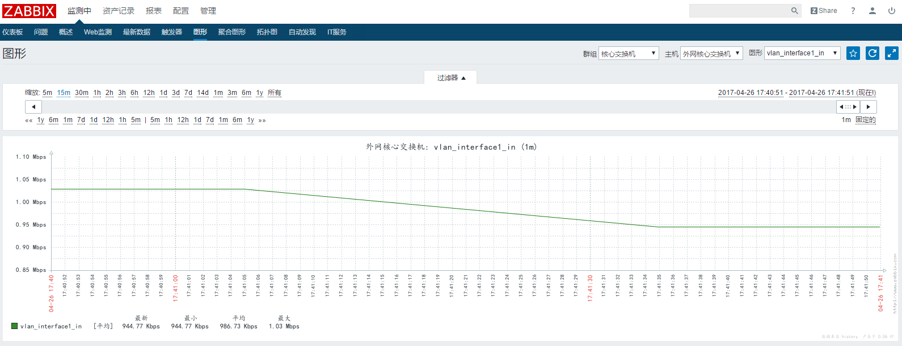
哈哈~现在已经是下班时间，用的流量少了，这很正常~因为当前时间已经是17:40啦~
致那些迷茫的小伙伴：
好了，配置的步骤就是这样了，你想要监控什么东西只要找到其OID即可，配置起来没有任何的难度，但是我们在刚刚接触这个软件的时候觉得他很陌生这是很正常的，但是当我们玩熟了这个软件，其实发现它也就那样，没有那么复杂，主要是看你是否用心，我在自己QQ群里，去年就在问用zabbix监控H3C交换机咋弄，3个月前还是他在问，1个月前他还在问同样的一个问题，最近我有时间了，用了2个小时就搞定了，当然比我牛逼的大神多了去了，他们可能不到2分钟就搞定的了，但是我第一次去研究的话就要花费他们60倍的时间，这就是差距！其实我也感叹很深，我一个朋友曾经说过一句话我觉得挺有道理的：“菜鸟并不可怕，可怕的是没有一颗研究的心！”，所以，能看到我博客的人我喜欢你也有一种研究精神，在群里多活跃，我们一起去研究一个东西，可能只用10分钟就搞定了，但是要我一个人要就一个东西的话可能要2个小时！我个人能力有限啊，只有大家团结起来，组成强大的知识网，我们才能变得越来越强~技术改变你我！
当你的才华还撑不起你的野心的时候，你就应该静下心来学习。当你的能力还驾驭不了你的目标的时候，你就应该沉下心来历练。问问自己，想要怎样的人生。